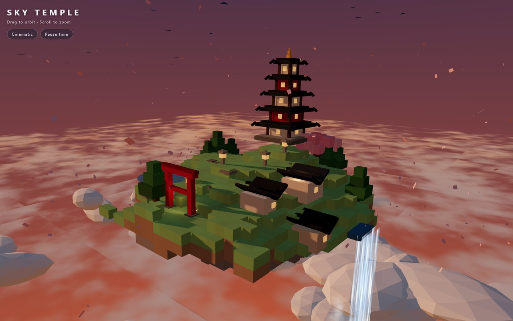
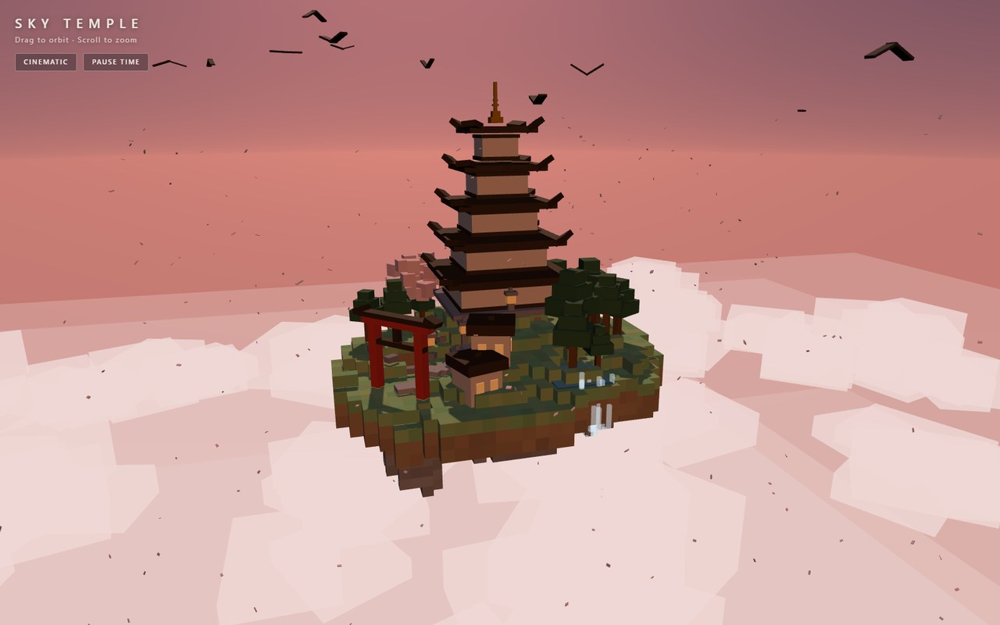

One-shot demo gallery
Browser demos written by AI models running on my own hardware — one prompt each, no cloud services, no build step. Click any card to run it live, or open it full size.
The bench
One message per test — no follow-ups, no fixes. Every file was opened and checked in a browser before it earned a card.

Sky Temple
Qwen3.8-Flash-Next · one-shot · 4 Oct 2026
A floating Japanese island in cube art — a five-tier pagoda, torii gate, waterfall, drifting petals and a 60-second day/night cycle.
run demo →

Living City
Qwen3.8-Flash-Next · one-shot · 4 Oct 2026
A city that builds itself at load — rush-hour traffic, working traffic lights, a river with bridges and a 90-second day/night cycle.
run demo →

Neon Drift
Qwen3.8-Flash-Next · one-shot · 5 Oct 2026
A playable synthwave racer — an endless curving highway, boost meter, near-miss bonuses and a fully synthesised soundtrack.
run demo →

Pulse Engine
Qwen3.8-Flash-Next · one-shot · 5 Oct 2026
A generative instrument — a drum machine and synth that compose on their own while a particle galaxy pulses on the beat.
run demo →

Cloth Lab
Qwen3.8-Flash-Next · one-shot · 5 Oct 2026
A from-scratch cloth physics lab — drag it, tear it, switch on the wind, drop balls on it. The solver is hand-written; no physics library.
run demo →
Same brief, different builds
The Sky Temple prompt again — once on another local model, once rebuilt by my agent harness.

Sky Temple — 27B build
Qwen3.8-27B · one-shot · 6 Oct 2026
The same brief on a different local model — same prompt, different handwriting.
run demo →

Sky Temple — agent rebuild
Qwen3.8-Flash-Next · agent build · 6 Oct 2026
The same brief, rebuilt from scratch by my agent harness driving the local model over the live server.
run demo →